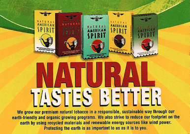
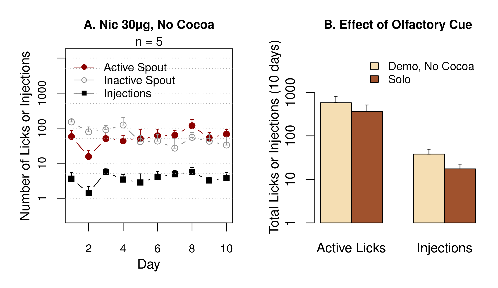
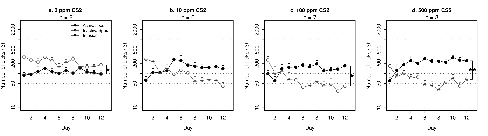

Project 2. Socially-acquired nicotine self-administration
Hao Chen
University of Tennessee Health Science Center
Rat GWAS retreat | University of Chicago | Oct 17 2015
Nicotine is primarily aversive in non-smokers

|

|
| Coughing, nausea, dizziness, sickness, burning throat, headache | Nicotine induces drug high only in significantly nicotine-deprived smokers. |
Nicotine self-administration with flavor cue

|  |
Flavor cue does not support nicotine self-administration

Chen, et al., 2011, Neuropsychopharmacology
Social environment influences smoking behavior


Chen, et al., 2011, Neuropsychopharmacology
Modeling social learning

|

|
Social learning induces nicotine self-administration

Chen, et al., 2011, Neuropsychopharmacology
Social learning induces nicotine self-administration
Chen, et al., 2011, Neuropsychopharmacology
Social learning reverses conditioned aversion to nicotine

Nicotine self-administration with an aversive cue

NSE: Neutral social environment | ISE: Inducing social environment
Wang, et al., Under review.
Nicotine intake with appetitive vs aversive cues

Wang, et al., Under review
What is the social signal?
Olfactory but not gustatory cue is required

CS2 and flavor cue
Wang & Chen, 2014, PLoS ONE
Dose response to CS2

Wang & Chen, 2014, PLoS ONE
Social context-induced reinstatement
 Neutral social context
Neutral social context
 Inducing social context
Inducing social context
Context-induced reinstatement

Wang & Chen, 2014, PLoS ONE
Summary
- Nicotine is both rewarding and aversive.
- Flavor cues are associated with the aversive effect of nicotine.
- Social learning reverses conditioned aversion and facilitate nicotine self-administration.
- CS2 is a critical signal that mediates social learning and nicotine intake.
- Operant behavior is driven by the rewarding effect of nicotine, and not by the subjective value of the flavor cue.
The plan
- Breed adolescent HS rats
-
» Generate ~ 400 adolescent rats per year» Use four rats (2 ♂ + 2 ♀) in the behavioral studies and one rat for RNA-seq per litter - Phenotype social and emotional traits
-
» » Novel object» Social interaction
» Elevated plus maze» Marble bury - Socially-acquired nicotine self-administration
-
» Acquisition, 10 daily sessions» Progressive ratio, 1 session
» Cotinine assay, 1 time» Extinction, 3-7 sessions
» Reinstatement, 1 session - Data analysis
-
» Principle component analysis» Multiple Regression
The plan, continued
- Laser capture microdissection
-
» Collect 72 rats (36 ♂ + 36 ♀) on PND 56
» Finish in the first two years
» Four brain regions: AcbC, LHb, IL, OFC
» Each region obtain 8-10 ng total RNA
The plan, let's move on ...
| Age | Test |
|---|---|
| 21 | Wean |
| 30 | Open field: 1m x 1m x 0.5m (1 h) |
| 31 | Novelty: a cylindrical cage in the center (20 min) |
| 32 | Social interaction: a stranger rat in the cage (20 min) |
| 33 | Elevated plus maze (6 min) |
| 34 | Marble Bury |
| 35-37 | Surgery and recovery |
| 38-48 | Nicotine SA |
| 49 | Cotinine assay |
| 50-58 | Extinction, Reinstatement |